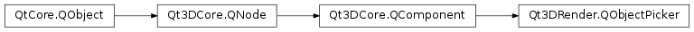

Qt3DRender.QObjectPicker¶
Synopsis¶
Functions¶
- def
containsMouse() - def
isDragEnabled() - def
isHoverEnabled() - def
isPressed()
Slots¶
- def
setDragEnabled(dragEnabled) - def
setHoverEnabled(hoverEnabled)
Signals¶
- def
clicked(pick) - def
containsMouseChanged(containsMouse) - def
dragEnabledChanged(dragEnabled) - def
entered() - def
exited() - def
hoverEnabledChanged(hoverEnabled) - def
moved(pick) - def
pressed(pick) - def
pressedChanged(pressed) - def
released(pick)
Detailed Description¶
The
QObjectPickerclass instantiates a component that can be used to interact with a QEntity by a process known as picking.For every combination of viewport and camera, picking casts a ray through the scene to find entities who’s bounding volume intersects the ray. The bounding volume is computed using the values in the attribute buffer specified by the boundingVolumePositionAttribute of the geometry.
The signals
PySide2.Qt3DRender.Qt3DRender::QObjectPicker.pressed(),PySide2.Qt3DRender.Qt3DRender::QObjectPicker.released(),PySide2.Qt3DRender.Qt3DRender::QObjectPicker.clicked(),PySide2.Qt3DRender.Qt3DRender::QObjectPicker.moved(),PySide2.Qt3DRender.Qt3DRender::QObjectPicker.entered(), andPySide2.Qt3DRender.Qt3DRender::QObjectPicker.exited()are emitted when the bounding volume defined by the pickAttribute property intersects with a ray.Most signals carry a
QPickEventinstance. If QPickingSettings::pickMode() is set toQPickingSettings.TrianglePicking, the actual type of the pick parameter will beQPickTriangleEvent.Pick queries are performed on mouse press and mouse release. If drag is enabled, queries also happen on each mouse move while any button is pressed. If hover is enabled, queries happen on every mouse move even if no button is pressed.
For generalised ray casting queries, see
Qt3DRender.QRayCasterandQt3DRender.QScreenRayCaster.Note
Instances of this component shouldn’t be shared, not respecting that condition will most likely result in undefined behavior.
See also
Qt3DRender.QPickingSettingsQt3DRender.QGeometryQt3DRender.QAttributeQt3DRender.QPickEventQt3DRender.QPickTriangleEvent
-
class
PySide2.Qt3DRender.Qt3DRender.QObjectPicker([parent=nullptr])¶ Parameters: parent – PySide2.Qt3DCore.Qt3DCore::QNode
-
PySide2.Qt3DRender.Qt3DRender.QObjectPicker.clicked(pick)¶ Parameters: pick – PySide2.Qt3DRender.Qt3DRender::QPickEvent
-
PySide2.Qt3DRender.Qt3DRender.QObjectPicker.containsMouse()¶ Return type: PySide2.QtCore.boolReturns true if the object picker currently contains the mouse
-
PySide2.Qt3DRender.Qt3DRender.QObjectPicker.containsMouseChanged(containsMouse)¶ Parameters: containsMouse – PySide2.QtCore.bool
-
PySide2.Qt3DRender.Qt3DRender.QObjectPicker.dragEnabledChanged(dragEnabled)¶ Parameters: dragEnabled – PySide2.QtCore.bool
-
PySide2.Qt3DRender.Qt3DRender.QObjectPicker.entered()¶
-
PySide2.Qt3DRender.Qt3DRender.QObjectPicker.exited()¶
-
PySide2.Qt3DRender.Qt3DRender.QObjectPicker.hoverEnabledChanged(hoverEnabled)¶ Parameters: hoverEnabled – PySide2.QtCore.bool
-
PySide2.Qt3DRender.Qt3DRender.QObjectPicker.isDragEnabled()¶ Return type: PySide2.QtCore.boolReturns true if dragging is enabled
-
PySide2.Qt3DRender.Qt3DRender.QObjectPicker.isHoverEnabled()¶ Return type: PySide2.QtCore.boolReturns true if hover enabled
-
PySide2.Qt3DRender.Qt3DRender.QObjectPicker.isPressed()¶ Return type: PySide2.QtCore.bool
-
PySide2.Qt3DRender.Qt3DRender.QObjectPicker.moved(pick)¶ Parameters: pick – PySide2.Qt3DRender.Qt3DRender::QPickEvent
-
PySide2.Qt3DRender.Qt3DRender.QObjectPicker.pressed(pick)¶ Parameters: pick – PySide2.Qt3DRender.Qt3DRender::QPickEvent
-
PySide2.Qt3DRender.Qt3DRender.QObjectPicker.pressedChanged(pressed)¶ Parameters: pressed – PySide2.QtCore.bool
-
PySide2.Qt3DRender.Qt3DRender.QObjectPicker.released(pick)¶ Parameters: pick – PySide2.Qt3DRender.Qt3DRender::QPickEvent
-
PySide2.Qt3DRender.Qt3DRender.QObjectPicker.setDragEnabled(dragEnabled)¶ Parameters: dragEnabled – PySide2.QtCore.boolSets the
dragEnabled()Property todragEnabledSee also
PySide2.Qt3DRender.Qt3DRender::QObjectPicker.isDragEnabled()
-
PySide2.Qt3DRender.Qt3DRender.QObjectPicker.setHoverEnabled(hoverEnabled)¶ Parameters: hoverEnabled – PySide2.QtCore.boolSets the
hoverEnabled()Property tohoverEnabledSee also
PySide2.Qt3DRender.Qt3DRender::QObjectPicker.isHoverEnabled()
© 2018 The Qt Company Ltd. Documentation contributions included herein are the copyrights of their respective owners. The documentation provided herein is licensed under the terms of the GNU Free Documentation License version 1.3 as published by the Free Software Foundation. Qt and respective logos are trademarks of The Qt Company Ltd. in Finland and/or other countries worldwide. All other trademarks are property of their respective owners.